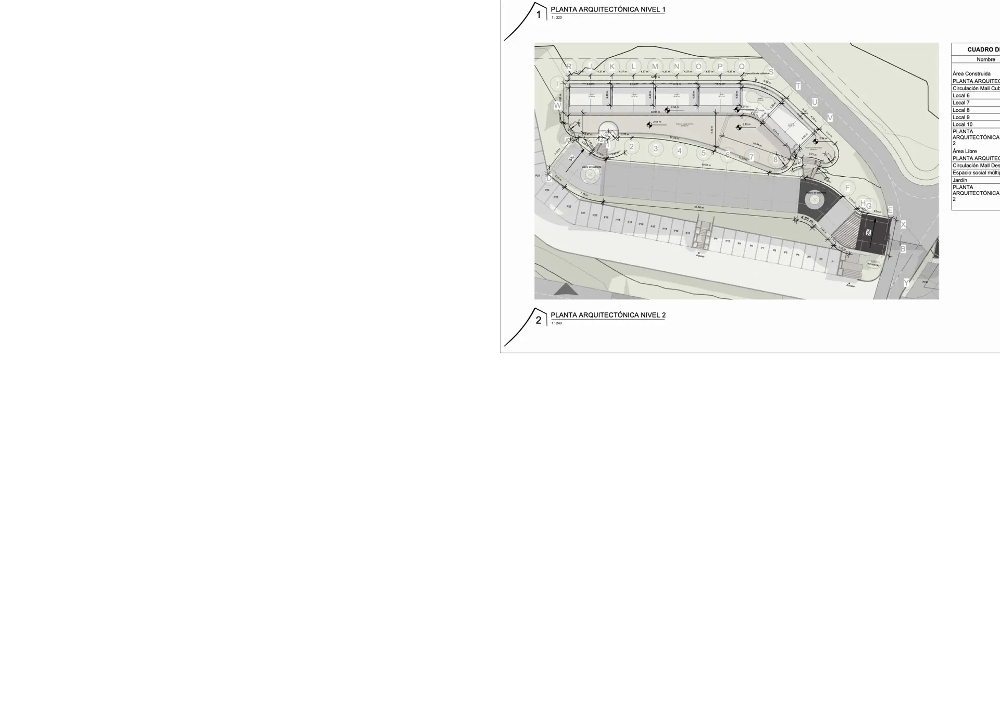

TITIRIBÍ • SUROESTE ANTIOQUEÑO
LA SENDA El privilegio de pertenecer
Un refugio residencial campestre concebido bajo el equilibrio natural del suroeste antioqueño. 62 lotes exclusivos rodeados de bosques, quebradas y senderos.
CAMINOS ANCESTRALES
El Origen del Territorio
Dicen que cada territorio guarda varios caminos, pero solo algunos están destinados a encontrarnos. Conoce el origen de los trazados de La Senda.
Caminos de los Nutabes
Antes de ser arriería, estos senderos de montaña fueron trazados por las comunidades Nutabes. Rutas de intercambio de sal, oro y maíz.
Ruta del Café y Carbón
En el siglo XIX, Titiribí se convirtió en la capital industrial de Antioquia. Por estos mismos linderos transitaban mulas cargadas de carbón y café de exportación.
Preservación Silenciosa
Con el paso del tiempo, el ruido de la minería cesó, permitiendo que el bosque nativo recuperara su soberanía. Hoy nace un santuario residencial para caminar sin prisa.
Senda del Encuentro
Diseñada para celebrar la vida en comunidad. Activa tus días con el mall comercial y comparte en un entorno social único.
Explorar EtapaSenda del Movimiento
Para quienes necesitan la acción para sentirse vivos. Senderos de montaña que rematan en un espectacular mirador panorámico.
Explorar EtapaSenda de la Calma
El refugio del silencio y la introspección. Disfruta del murmullo del agua en el parque lineal y relájate en la estancia del bosque.
Explorar EtapaSenda del Encuentro
Contenido dinámico.
Amenidades Destacadas
Vive La Senda
antes de elegirla
24,6 hectáreas de suroeste antioqueño puro. Bosque nativo, quebradas y la brisa de la montaña, capturados en su estado más natural.
Encontrar mi loteDATOS TÉCNICOS DE PRECISIÓN
Especificaciones del Proyecto
La Senda se extiende sobre un globo de terreno de 24.6 Hectáreas con un diseño parcelario enfocado en la baja ocupación y la conservación.
Límites orgánicos respetuosos de la topografía. Evitamos cercas duras y priorizamos la vegetación nativa como Eugenia o Duranta.
Ingeniería vial adaptada para mitigar la erosión, con pavimentos seleccionados según el porcentaje de inclinación natural.
| Pendientes Planas (<10%) | Afirmado Compacto y Acribado | 1,416 m |
| Pendiente Moderada (11%-16%) | Adoquín o Asfalto | 617 m |
| Pendiente Pronunciada (>16%) | Rieles y Placa Huella | 717 m |
Caminos peatonales de 1.20 m de ancho dedicados a la inmersión forestal, aislados del tráfico de vehículos.
| Ruta del Agua (Calma) | Parque lineal y decks del río | 407 m |
| Ruta de la Montaña (Movimiento) | Ascenso a deck mirador | 329 m |
| Ruta del Encuentro (Conexión) | Conexión comercial-social | 432 m |

Plano de Distribución y Planimetría
Consulta el documento técnico oficial del Mall Comercial y la Portería (Senda del Encuentro).
Ver Documento CompletoELIGE TU PARCELA
Catálogo de Lotes
Comienza tu Senda
Un hábitat consciente y planificado por arquitectos. Coordina tu recorrido personalizado en la montaña.

Un proyecto parcelario único en el Suroeste Antioqueño. Conexión natural, urbanismo responsable y alta valorización.